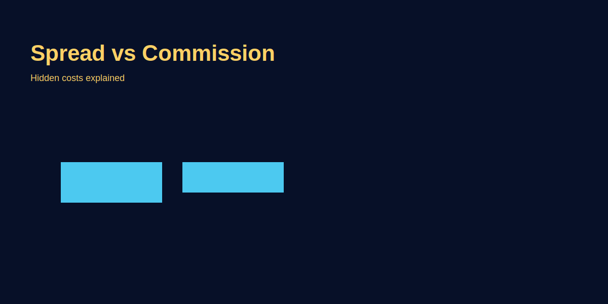

Spread vs Commission
Problem-based introduction
Traders often misunderstand broker costs: spread vs commission — kaunsa model better hai aur kaise cost calculate karein? Is article mein simple Hinglish mein explain karenge, aur GOLD (XAU/USD) ki example se real cost dikhayenge.
Step-by-step explanation
- Spread: Difference between bid and ask — broker may build markup into spread.
- Commission: Fixed fee per trade or per lot charged separately; common in ECN/STP models.
- Which is cheaper? Depends on strategy, frequency, and pair; low-spread + commission vs wider spread + no commission trade-off.
Real trading logic (GOLD example)
Example: Broker A shows spread 0.6 USD on XAU/USD with no commission; Broker B shows spread 0.1 USD + $2 commission per lot. For scalpers, Broker B may be cheaper despite commission; for swing traders, spread-only might be simpler—calculate total cost per typical trade duration.
Image-based examples (mandatory)
Cost Math (Side-by-Side)
Assume XAU/USD, 0.1 lot (mini) — pip value approx $1 per 0.10 move if broker spec similar.
| Model | Spread | Commission | Round-trip Cost |
|---|---|---|---|
| A: Spread-only | 0.6 | $0 | $0.60 |
| B: Raw + commission | 0.1 | $2 per lot = $0.20 per 0.1 lot | $0.30 |
Takeaway: Scalpers benefit from raw+commission; spread-only may be fine for swings if you trade less frequently.
Spread Behavior by Session
- London/NY overlap: Spreads tightest (GOLD 20–50 cents; majors 0.2–0.8 pips). Best for cost efficiency.
- Asia mid-day: Spreads widen; cross pairs and GOLD can double. Reduce size or avoid scalps.
- High-impact news: Spreads explode (GOLD 1–3 dollars). Avoid new entries; wait for normalization.
Swap/Financing Cost (Hidden Fee)
Overnight hold karte waqt swap lagta hai; brokers Wednesday triple swap charge karte hain. Always check table.
- Example GOLD swing: 0.1 lot, swap -$2/day → 5 days = -$10. Your 30-pip target $30 becomes $20 net.
- Carry trades: Some pairs positive swap dete hain; but verify rates; they change.
Slippage — The Silent Cost
Slippage = expected fill vs actual. News, low liquidity, or slow execution cause it.
- Measure: Journal expected vs actual price. Average slippage × pip value × lot = hidden cost.
- Action: Avoid market orders at news; use limits/stop-limits; trade in liquid sessions.
Slippage Math Example: Target entry GOLD 2020.00; actual fill 2020.50 (0.5 slippage). On 0.1 lot (pip value $1/0.10 move), that's ~$5 slippage. If you scalp 10 trades/day with avg 0.3 slippage, daily hidden cost = $30. Over 20 trading days, you lose $600 to slippage alone—never factored into spread or commission.
Broker comparison: Test 50 demo trades on two brokers; measure average slippage. Lower slippage broker wins even if spread is 0.1 pip wider.
Choosing Account Type
- Standard/Spread-only: Simple, no commission; spreads wider. Good for beginners and low-frequency swing.
- ECN/Raw Spread: Tight spreads + commission; better for scalpers and intraday with tight targets.
- Cent/Micro accounts: Smaller contract size; great for practice. Check if commission differs.
Scenario Playbooks — Scalper vs Swing
Scalper: 15-pip GOLD target, 10 trades/day
- Broker A (spread-only 0.6): cost/trade $6 × 10 = $60/day. Monthly ~$1200.
- Broker B (raw 0.1 + $2 commission/lot): cost/trade $1 + $2 = $3 × 10 = $30/day. Monthly ~$600.
- Verdict: Broker B saves $600/month. Scalpers need raw spread accounts.
Swing trader: 150-pip GOLD target, 2 trades/week
- Broker A: cost/trade $6 × 2 = $12/week. Monthly ~$50.
- Broker B: cost/trade $3 × 2 = $6/week. Monthly ~$25.
- Verdict: Swing trader saves $25/month—less impact, simpler spread-only model acceptable if lower commission not offered.
Broker Cost Comparison Checklist
- Open demo account on 2–3 brokers; trade same setup 50 times.
- Record: spread at entry, commission per lot, slippage (expected vs actual fill), swap (overnight hold).
- Calculate total cost per trade: (spread × pip value) + commission + slippage + swap.
- Multiply by monthly trade count; lowest total cost = winner.
- Factor withdrawal speed, regulation, support quality—cost alone not enough.
Position Sizing with Costs
Cost impact risk: cost as % of risk per trade. Example: risking $50 per trade; cost $5. That's 10% of risk—must ensure winrate/R:R justify it.
Formula: Adjusted R = (Target − Entry − Cost) / Stop distance. If raw R = 2:1, but cost $5, adjust: (100 pip target − 5 pip cost) / 50 pip stop = 1.9:1. Marginal difference for swing; huge for scalps.
Rule: If cost > 10% of 1R, reduce lot size or trade less frequently until strategy's edge > cost drag.
Meta-Cost Framework (Beyond Spread & Commission)
- Opportunity cost: Widen spreads force you to skip valid entries or stop-out early. Measure: trades skipped/month × avg win if taken = hidden loss.
- Psychological cost: Wide spreads cause stress, overtrading to "recover" cost. Journal emotional trades triggered by cost anxiety.
- Execution delay: Slow broker = missed fills. Track order rejection rate; > 5% = switch broker.
Risk Controls
- Risk cap: 0.25%–0.5% intraday; 1% swing.
- Include cost in R:R: target must exceed (spread + commission + slippage + swap if held).
- Kill switch: if slippage > 0.2R in session, pause trading.
- Monthly cost audit: Total costs / total profit. If > 20%, reduce frequency or improve execution.
- Cost-per-win threshold: If you need 3 winners to recover 10 losers + costs, edge evaporates. Track cost drag weekly.
Cost Reduction Roadmap
- Week 1-2: Journal 50 trades; calculate avg cost/trade (spread + commission + slippage + swap).
- Week 3: Open demo with 2 alternate brokers; run same 50-trade test.
- Week 4: Compare total cost broker A vs B vs C. Switch to lowest cost if regulation/withdrawal OK.
- Month 2: Optimize trading hours to London/NY overlap; measure spread reduction. Target 20% cost drop.
- Month 3: Shift from market orders to limit orders where possible; measure slippage drop.
- Ongoing: Quarterly review. If strategy evolves (scalp → swing), re-evaluate broker model.
Taxation Note (India Context)
ITR mein broker costs (spread + commission) deductible nahi hain directly, but net profit ke against set off possible through capital gains calc. Keep broker statements, swap charges, commission invoices as proof. Consult CA for exact treatment under speculative income vs capital gains classification.
Common Mistakes
- Ignoring swap/overnight fees and only looking at spread.
- Comparing advertised spreads without checking real-time execution during news.
- Scalping on wide-spread accounts; cost eats edge.
- Not sizing down when spreads widen in Asia/illiquid hours.
- Switching brokers without testing demo; live execution differs from advertised spreads.
- Using market orders during high volatility; slippage spikes 3x–5x normal.
Pro Tips
- Check execution reports or ask demo account to measure real spreads and slippage.
- For frequent traders, calculate average cost per trade including commission and spread to choose broker.
- Session timing hack: Trade GOLD/EUR pairs 1-2 hours into London session; spreads settle after open volatility but liquidity still high.
- VPS advantage: If broker in London/NY and you're in Asia, VPS co-located with broker data center cuts latency 70-100ms; reduces slippage on fast markets.
- Spread alert tool: Set MetaTrader spread indicator; if GOLD spread > 0.8, pause scalping. Saves dozens of high-cost entries monthly.
- Commission cap brokers: Some ECN brokers cap max commission at $7-10/lot on high-volume accounts. Negotiate if trading 50+ lots/month.
Cost Audit Practice Plan (30-Day)
- Days 1-7: Journal every trade; note exact spread at entry, commission charged, expected vs actual fill price. Calculate total cost/trade.
- Days 8-14: Aggregate weekly: total trades, total costs, cost as % of gross P&L. Identify worst 3 trades by cost/R ratio.
- Days 15-21: Test alternate broker demo; replicate week 1-2 setups. Compare spread, slippage, commission line-by-line.
- Days 22-28: Optimize session timing; trade only London/NY overlap. Measure spread reduction vs weeks 1-2.
- Day 29-30: Decision: switch broker if alternate saves > 15%; else optimize hours/order types. Set quarterly review reminder.
Risk Warning
Broker costs can vary with market conditions; always test execution and factor costs in your P&L planning.
SEO FAQs
- 1. Spread aur commission mein difference kya hai?
- Spread ask-bid ka difference; commission fixed fee charged separately. Total cost = spread + commission + slippage + swap.
- 2. Scalpers ko kaunsa model choose karna chahiye?
- Raw spread + commission model. Tight spreads (0.1–0.2 on GOLD) + $2–$3 commission/lot cheaper than 0.6 spread-only for high-frequency trades.
- 3. GOLD trading mein costs kaise manage karein?
- Trade London/NY overlap for tight spreads; use limit orders; journal slippage; factor swap if holding overnight. Monthly cost audit: costs should be < 20% of gross profit.
- 4. Kya swap charges trading costs mein count hote hain?
- Yes. Overnight hold par swap daily charge hota hai; Wednesday triple swap. Include in multi-day swing cost calculation.
- 5. Broker comparison kaise karein accurately?
- 50 demo trades on 2–3 brokers; measure spread at your trading time, commission per lot, slippage avg, swap rates. Calculate total cost/trade; multiply by monthly frequency. Lowest total cost + good regulation = best choice.
- 6. Slippage ko kaise reduce karein?
- Avoid market orders during news; use limit/stop-limit orders; trade in high-liquidity sessions (London open, NY open). Test broker execution speed on demo; < 50ms latency ideal.